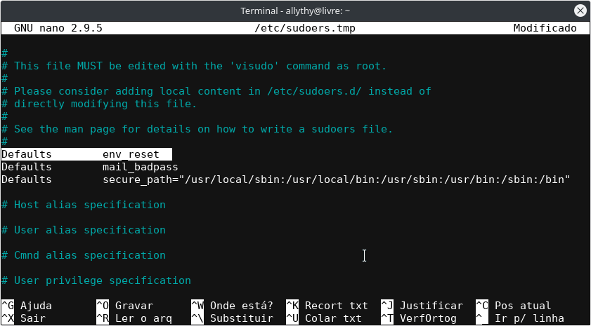

Essa vai ser uma dica rápida, mas é bem útil. Vamos aprender como alterar o tempo de autenticação da senha do sudo. Por padrão, quando executamos algum comando com privilégios de superusuário, como sudo apt update, as credencias de autenticação são armazenadas em cache por 15 minutos. Assim, para alguns esse tempo é pouco, mas para outros é muito tempo. Então, vamos saber como alterar o tempo autenticação da senha do sudo.
Assim, primeiro, temos que abrir o arquivo de configuração do sudo, que está localizando em etc/sudoers. Então, para isso, vamos usar o comando visudo, porque não é recomendado alterar direto no arquivo de configuração.
sudo visudo

Vamos alterar a linha onde tem Defaults env_reset acrescentando o parâmetro timestamp_timeout=xx. Onde tem “xx” é o valor em minutos que você vai colocar para que o sudo peça a senha. Nesse exemplo eu vou colocar 5 minutos:

Feito isso, pressione Ctrl+x para sair e depois s para salvar.
Se você quiser que peça a senha toda vez que executar o sudo, altere o valor do timestamp_timeout para 0 (zero). Você também pode desabilitar a senha colocando o valor -1, o que não é recomendando por motivos de segurança.